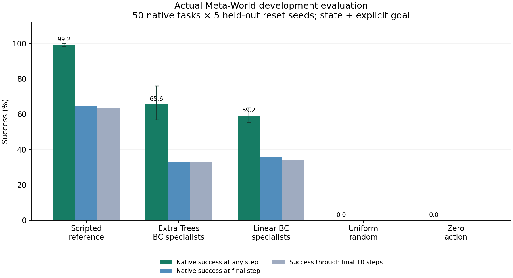

章節與資料庫
整體設計、廣度與目標實際執行、模型與驗證待完善事項與驗收Benchmark × 領域／場景／題數規模方案與來源查核完整原生來源盤點01研究目標與當前狀態02用一個例子理解整套系統03規模的六個 granularity levels04文獻地圖、Ego 與預測研究05和既有 benchmark 比，哪些可以復用06完整 benchmark 的覆蓋設計07示範、標註、資料切分與有效性08評測協定、指標與比較方法09六個詳細情境：從概念到驗收10難度如何量化11題數、領域與執行預算12工程實作、資料格式與發布13論文流程與 milestones14版本口徑、閱讀結論與尚待決策48 個任務家族180 個情境藍圖24 個 Ego 題型40 個指標完整分類軸原生規模比較文獻更新與分類250 篇文獻來源與資料字典從規格，進到真正的模擬與驗證。
在本機執行 Meta-World／MuJoCo，儲存初態、動作、結果與重播證據。這裡列出完整原生測試集合的結果，以及清楚的適用範圍。
50 是既有來源的原生任務 ID，不是新造或跨作去重後的 G2。輸入是 39 維 state＋明示目標，機體是單 Sawyer 手臂；沒有把這次結果當成人類影片、雙臂、柔性物、12 場域或完整 VLA 的驗證。
檢視其餘待完成範圍 →新初態上的五方法比較
訓練使用初態 seed 101–110；測試使用全新的 201–205，每個原生任務都有五個測試初態。兩種 BC 使用成功參考軌跡訓練為任務專用模型，超引數先固定；沒有宣稱跨任務或跨物件泛化。
| 方法 | 曾達原生成功 | 結束時成功 | 最後10步成功 |
|---|---|---|---|
| 原生指令碼參考 | 99.2% | 64.4% | 63.6% |
| Extra Trees BC（分任務） | 65.6% | 33.2% | 32.8% |
| 線性 BC（分任務） | 59.2% | 36.0% | 34.4% |
| 均勻隨機 | 0.0% | 0.0% | 0.0% |
| 零動作 | 0.0% | 0.0% | 0.0% |

一段實際動作重播
這是已記錄動作在相同模擬初態的渲染重播；不是人類影片。它是說明用的一個成功例，所有成敗仍完整列入上方表格和下載紀錄。
具體驗證了哪些事情
- 所有請求的測試都有紀錄；沒有遺漏、執行錯誤、非有限狀態或跨方法 reset 不一致。
- 100 次測試動作重播與原記錄一致，觀測比較容差為 1e-8。
- reach/window 的 50,000 個步驟，透過 MuJoCo site 幾何獨立比對成功條件，沒有分歧。其他任務仍需進一步判分器審核。
- 10,000 個學習模型動作從儲存權重重算，與紀錄完全相同；訓練與測試初態 hash 不重疊。
實作中發現並修正的 reset 問題
在固定套件版本組合，window-close 的 reset 會留下過期 kinematics／初始觀測，讓初態成功查詢與實際 joint state 不一致。適配層加入 mj_forward，再同步當前與歷史觀測；沒有改 qpos、qvel 或推進模擬時間。修正作為新的 reset contract 儲存，舊實驗亦保留。
完整50個原生任務結果
每格為五個新初態的 native-ever success。沒有以挑選成功案例替代完整結果。這些不是跨作正規化 G2 計數或完整的應用領域覆蓋。
| 原生任務 | 原生指令碼參考 | Extra Trees BC（分任務） | 線性 BC（分任務） | 均勻隨機 | 零動作 |
|---|---|---|---|---|---|
| assembly-v3 | 100.0% | 100.0% | 0.0% | 0.0% | 0.0% |
| basketball-v3 | 100.0% | 60.0% | 0.0% | 0.0% | 0.0% |
| bin-picking-v3 | 100.0% | 60.0% | 0.0% | 0.0% | 0.0% |
| box-close-v3 | 80.0% | 80.0% | 60.0% | 0.0% | 0.0% |
| button-press-topdown-v3 | 100.0% | 100.0% | 100.0% | 0.0% | 0.0% |
| button-press-topdown-wall-v3 | 100.0% | 60.0% | 100.0% | 0.0% | 0.0% |
| button-press-v3 | 100.0% | 100.0% | 100.0% | 0.0% | 0.0% |
| button-press-wall-v3 | 100.0% | 100.0% | 100.0% | 0.0% | 0.0% |
| coffee-button-v3 | 100.0% | 100.0% | 100.0% | 0.0% | 0.0% |
| coffee-pull-v3 | 100.0% | 80.0% | 0.0% | 0.0% | 0.0% |
| coffee-push-v3 | 100.0% | 60.0% | 60.0% | 0.0% | 0.0% |
| dial-turn-v3 | 100.0% | 80.0% | 100.0% | 0.0% | 0.0% |
| disassemble-v3 | 100.0% | 60.0% | 0.0% | 0.0% | 0.0% |
| door-close-v3 | 100.0% | 100.0% | 100.0% | 0.0% | 0.0% |
| door-lock-v3 | 100.0% | 60.0% | 0.0% | 0.0% | 0.0% |
| door-open-v3 | 100.0% | 100.0% | 100.0% | 0.0% | 0.0% |
| door-unlock-v3 | 100.0% | 80.0% | 100.0% | 0.0% | 0.0% |
| drawer-close-v3 | 100.0% | 100.0% | 40.0% | 0.0% | 0.0% |
| drawer-open-v3 | 100.0% | 100.0% | 100.0% | 0.0% | 0.0% |
| faucet-close-v3 | 100.0% | 80.0% | 100.0% | 0.0% | 0.0% |
| faucet-open-v3 | 100.0% | 100.0% | 100.0% | 0.0% | 0.0% |
| hammer-v3 | 100.0% | 20.0% | 100.0% | 0.0% | 0.0% |
| hand-insert-v3 | 100.0% | 80.0% | 60.0% | 0.0% | 0.0% |
| handle-press-side-v3 | 100.0% | 100.0% | 100.0% | 0.0% | 0.0% |
| handle-press-v3 | 100.0% | 100.0% | 40.0% | 0.0% | 0.0% |
| handle-pull-side-v3 | 100.0% | 0.0% | 0.0% | 0.0% | 0.0% |
| handle-pull-v3 | 100.0% | 0.0% | 100.0% | 0.0% | 0.0% |
| lever-pull-v3 | 100.0% | 40.0% | 20.0% | 0.0% | 0.0% |
| peg-insert-side-v3 | 80.0% | 0.0% | 0.0% | 0.0% | 0.0% |
| peg-unplug-side-v3 | 100.0% | 0.0% | 0.0% | 0.0% | 0.0% |
| pick-out-of-hole-v3 | 100.0% | 40.0% | 40.0% | 0.0% | 0.0% |
| pick-place-v3 | 100.0% | 60.0% | 20.0% | 0.0% | 0.0% |
| pick-place-wall-v3 | 100.0% | 100.0% | 60.0% | 0.0% | 0.0% |
| plate-slide-back-side-v3 | 100.0% | 100.0% | 100.0% | 0.0% | 0.0% |
| plate-slide-back-v3 | 100.0% | 20.0% | 0.0% | 0.0% | 0.0% |
| plate-slide-side-v3 | 100.0% | 100.0% | 20.0% | 0.0% | 0.0% |
| plate-slide-v3 | 100.0% | 100.0% | 100.0% | 0.0% | 0.0% |
| push-back-v3 | 100.0% | 20.0% | 40.0% | 0.0% | 0.0% |
| push-v3 | 100.0% | 80.0% | 60.0% | 0.0% | 0.0% |
| push-wall-v3 | 100.0% | 100.0% | 80.0% | 0.0% | 0.0% |
| reach-v3 | 100.0% | 40.0% | 100.0% | 0.0% | 0.0% |
| reach-wall-v3 | 100.0% | 80.0% | 100.0% | 0.0% | 0.0% |
| shelf-place-v3 | 100.0% | 20.0% | 0.0% | 0.0% | 0.0% |
| soccer-v3 | 100.0% | 40.0% | 80.0% | 0.0% | 0.0% |
| stick-pull-v3 | 100.0% | 80.0% | 20.0% | 0.0% | 0.0% |
| stick-push-v3 | 100.0% | 100.0% | 100.0% | 0.0% | 0.0% |
| sweep-into-v3 | 100.0% | 40.0% | 0.0% | 0.0% | 0.0% |
| sweep-v3 | 100.0% | 20.0% | 60.0% | 0.0% | 0.0% |
| window-close-v3 | 100.0% | 40.0% | 100.0% | 0.0% | 0.0% |
| window-open-v3 | 100.0% | 0.0% | 100.0% | 0.0% | 0.0% |
同時完成的資料工程與尚待驗證範圍
已解析 1,146 個宣告目標，索引 598 筆明訂 success 評估／條件註冊來源；42組goal-only重疊保留待語義判斷。另有279筆typed counts、1428格來源索引，以及12場域／16粗家族／9機制的開發codebook。
完整 G2 去重與 2× 分母、多材料／多機體／多場域例項、人類影片到執行、過程／恢復評測及最終基線仍未完成。原有 2,000–3,000 G2 初始目標和廣覆蓋要求維持。
另提供D_BC＝1−兩個BC成功率平均的逐任務難度代理值，及成對初態bootstrap描述。這只反映兩個state專用方法，沒有據此把任務定成通用easy／medium／hard。